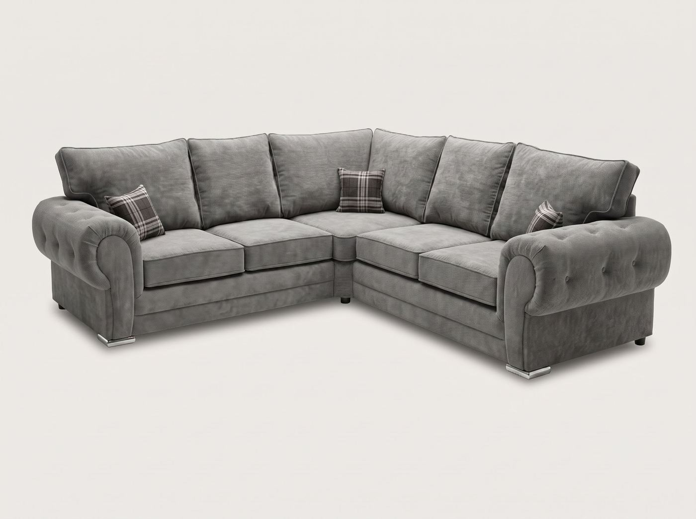

The short version
| Option | Typical wait | The trade-off |
|---|---|---|
| Standard made-to-order from a big retailer | Often 4 to 12 weeks | Plenty of choice, but a long wait |
| Ready-made, in-stock sofas | Days, sometimes next day | Fast, but only the sizes and colours already in the warehouse |
| Quick made-to-order (how we work) | Most orders made and delivered within 2–3 days of confirming | Your fabric, colour and size, without the long wait |
If you need a sofa quickly, for a move, a new room or guests at Christmas, the most important thing is to ask for a delivery date before you pay, and to get it in writing. “Fast delivery” on a banner means very little until someone has looked at your order and confirmed a date.
Why most sofas take so long
Most sofas sold in the UK are made to order. Once you pay, your order joins a factory queue, sometimes overseas, and is then shipped, warehoused and booked onto a delivery route. Each step adds time, which is why waits of several weeks, and sometimes three months, are common at the big furniture chains.
Ready-made sofas skip the queue because they are already built and in a warehouse. That is why they can arrive within days. The catch is that you can only have the sizes, shapes and colours that are already in stock.
How to get a sofa quickly without settling
- Ask for a date, not a promise: “usually within a few days” is helpful, but what you need is a confirmed day once your order is placed.
- Decide everything in one go: model, fabric, colour, size and which side the corner goes. Every back-and-forth after ordering pushes the date back.
- Measure the way in before you order: a sofa that won’t fit through the door or round the stairs is the most common reason a delivery fails. Our measuring guide shows what to check.
- Check where they deliver: “free UK delivery” often means mainland only. If you live in the Highlands, Northern Ireland or on an island, ask first.
- Be home on the day: a missed delivery can mean waiting for the next slot on that route.
Getting a sofa before Christmas
December is the busiest month of the year for furniture delivery, and plenty of people find out too late that their sofa won’t arrive until January. A few things help:
- Order earlier than you think you need to: even when delivery is quick, December delivery days fill up and roads are busier.
- Tell the seller your deadline when you order: an honest seller will tell you upfront whether your date is realistic.
- Plan the old sofa: decide how you will get rid of your old sofa before the new one arrives, so the room is clear on the day.
- Have the measurements ready: room, doorways and stairs. Sending them with your order avoids delays while the size is checked.
How fast delivery works at Barki Sofa Hub
Every sofa we sell is made to order in your choice of fabric, colour and size. Once your order is confirmed, meaning we have agreed the model, fabric, colour and measurements, most orders are made and delivered within 2–3 days. In Blackburn and across Lancashire it is often quicker.
- Free delivery to mainland England, Wales and mainland Scotland, with no minimum spend
- Cash on delivery available on most orders, so you can pay when the sofa arrives
- Carried into your room where access allows, with the packaging taken away
- Sections for tight access: many of our sofas can be built in sections for narrow doors and stairs, as long as you tell us before production starts
Full details are on our delivery page. Browse all our sofas, or read how cash on delivery works.
Common questions
How quickly can I get a sofa delivered in the UK?
It depends on the type of sofa. Ready-made sofas that are already in stock can arrive within days. Made-to-order sofas from large retailers often take 4 to 12 weeks. At Barki Sofa Hub most made-to-order sofas are made and delivered within 2–3 days of the order being confirmed.
Can I get a sofa delivered before Christmas?
Usually, yes, if you order early enough and confirm the date with the seller when you order. December is the busiest month for furniture delivery, so tell the seller your deadline upfront and have your room and doorway measurements ready.
Why do sofas take so long to deliver?
Most sofas are made to order. After you pay, the order waits in a factory queue, is built, often shipped from abroad, warehoused and then booked onto a delivery route. Each step adds time.
Is sofa delivery free?
It varies by retailer. At Barki Sofa Hub delivery is free to mainland England, Wales and mainland Scotland, with no minimum spend. For the Highlands, Northern Ireland and the islands, send us your postcode before ordering.
Can I pay for my sofa on delivery?
With us, yes: cash on delivery is available on most orders, so you pay when the sofa arrives. You can also pay a deposit and settle the balance on delivery.